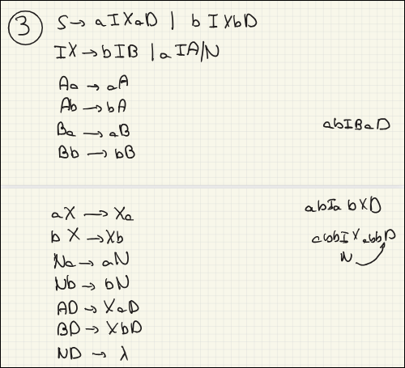
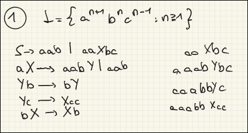
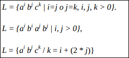
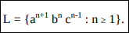
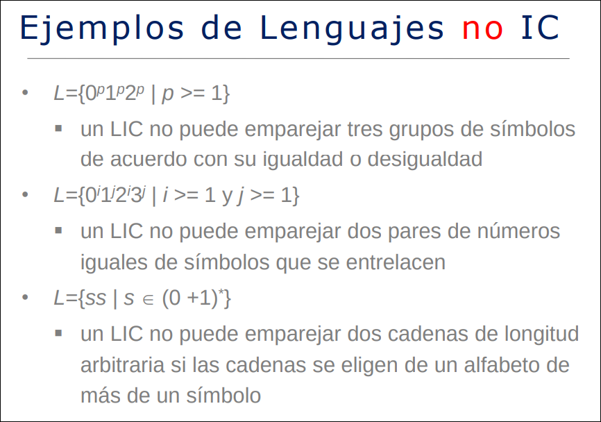
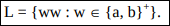

TALF · curso 3
7. Gramáticas GSC Y GSR
7.1 Gramáticas Sin Restricciones (GSR) - Tipo 0
Como su nombre indica, son las gramáticas más flexibles y potentes. No tienen límites en la forma de sus reglas, salvo que siempre debe haber algo que sustituir.
Definición y Reglas
Una GSR se define formalmente como
Sus producciones tienen la forma genérica:
Donde:
(Izquierda): Es una cadena de símbolos terminales y no terminales ( ). La única condición es que no puede estar vacía (debe tener al menos un símbolo). (Derecha): Es cualquier cadena de símbolos terminales y no terminales. Puede ser vacía.
Características Clave
- Libertad total: Puedes reemplazar un grupo de símbolos por otro grupo, acortar la cadena, alargarla o borrar símbolos completamente.
- Lenguaje que generan: Generan los Lenguajes Recursivamente Enumerables (LRE).
- Máquina Equivalente: Son reconocidos por la Máquina de Turing estándar.
Ejemplo:

7.2 Gramáticas Sensibles al Contexto (GSC) - Tipo 1
Estas gramáticas imponen restricciones sobre las GSR. La idea principal es que las sustituciones dependen de lo que rodea a la variable ("el contexto") y la cadena nunca se hace más pequeña.
Definición y Reglas
Una GSC tiene producciones de la forma:
Desglosemos qué significa esto:
: Es un símbolo no terminal (la variable que vamos a cambiar). y (El Contexto): Son cadenas de terminales o no terminales (pueden ser vacías). Representan lo que está a la izquierda y derecha de . (El Cambio): Es una cadena no vacía. Es por lo que sustituimos a .
La Regla de Oro: No Contracción La característica más importante para identificar una GSC es la longitud.
- La longitud de la parte derecha (
) debe ser igual o mayor que la de la parte izquierda ( ). - Esto significa que la gramática nunca "encoge" la cadena (excepto posiblemente para generar la cadena vacía
si el lenguaje lo permite).
Ejemplo:

Relación con Máquinas
- Lenguaje que generan: Lenguajes Sensibles al Contexto (LSC).
- Máquina Equivalente: Son reconocidos por los Autómatas Linealmente Acotados (ALA). Es una Máquina de Turing (MT) determinista con su cinta limitada por ambos extremos, el tamaño de la cinta está limitado por el tamaño de la palabra (el tamaño de la cinta no es fijo por sí preguntan en un test). Para que la cabeza lectora no se "caiga" de la cinta, tiene dos símbolos especiales (marcadores) en los extremos izquierdo y derecho que le dicen "hasta aquí puedes llegar" .
La fórmula del Lenguaje
-
[(Marcador izquierdo): Es el muro de la izquierda.- La fórmula
significa: "Si la cabeza está en el estado y lee el muro [, pasa al estado, deja el muro intacto ( [) y se mueve a la Derecha ()". - En resumen: Rebota hacia dentro. No puede atravesarlo ni borrarlo.
- La fórmula
-
](Marcador derecho): Es el muro de la derecha.- La fórmula
significa: "Si lee el muro ], lo deja intacto y se mueve a la Izquierda ()". - En resumen: Rebota hacia dentro.
- La fórmula
Se traduce así:
- Tomas una palabra de entrada
. - La encierras entre los muros:
[w]. - Empiezas en el estado inicial
. - La máquina procesa (
) moviéndose dentro de esos muros. - Si la máquina llega a un estado final (
) manteniendo los muros intactos ( ), entonces acepta la palabra.
Un lenguaje L es sensible al contexto (LSC) si existe una GSC tal que
7.3 Protips
7.3.1 El Mensajero (Commutation)
Problema: Tienes variables mezcladas (ej:
La Estrategia: Creas una regla que permite que dos variables intercambien lugares.
Cómo:
- Generación: Generas pares o tríos desordenados.
- Tráfico: Usas reglas de la forma
para mover la variable "mensajera" a su posición correcta. - Conversión: Solo cuando están en orden, se convierten en terminales.
Ejemplo Práctico:
Queremos generar
Intentamos generar bloques
-
Regla de Inicio:
(Esto genera algo como ). - Problema: Tenemos una
antes de una . El orden está mal:
- Problema: Tenemos una
-
Regla del Mensajero:
. - Traducción: Si una
ve una a su derecha, le dice "Pasa tú primero". La viaja a la izquierda sobre la .
- Traducción: Si una
Derivación visual:
Resultado: Ahora las
están con las y las con las .
7.3.2 El Muro (Boundary)
Problema: En las GSC, las reglas son peligrosas. Si tienes la regla
La Estrategia: Usar símbolos especiales (Centinelas) que marcan el principio o el final de la cadena. Las variables no se convierten en terminales hasta que tocan "El Muro", y luego el cambio se propaga como un efecto dominó.
Cómo funciona:
- Colocar el Muro: Tu regla inicial pone topes.
. - Contacto: Una variable solo cambia si toca el muro.
. - Propagación: El cambio se contagia de derecha a izquierda (o viceversa).
.
Ejemplo Práctico: Convertir variables a letras ordenadamente
Imagina que tienes la cadena
- Colocamos muro al final:
- Regla de Gatillo:
(La última B toca el muro y se transforma). - Regla de Dominó:
(Una B mayúscula ve una b minúscula a su derecha y se transforma). - Regla de Cruce de Frontera:
(El cambio pasa de las B a las A).
Por qué es útil: Garantiza que no te queden letras sueltas en medio de variables no procesadas.
7.3.2 El Clonador
Problema: Necesitas duplicar información exacta, como en el lenguaje
La Estrategia: Una variable genera un par (el original y la copia) y una de ellas actúa como "Mensajero" viajando hasta su nueva posición.
Cómo funciona:
Para hacer
- Generar Pares: Por cada letra que quieras añadir, generas su par.
- Si quieres 'a', generas
.
- Si quieres 'a', generas
- Transporte:
es el clon. Debe viajar saltando sobre las hasta llegar a la segunda mitad de la palabra. - Regla de Salto:
(El clon salta sobre otras letras base).
Ejemplo Práctico:
Queremos generar
-
Semilla:
(Donde representa el par "Original 0 + Clon 0"). - Digamos que
en realidad genera .
- Digamos que
-
Generación: Generas
. - Aquí tienes "Original 0", "Clon 0", "Original 1", "Clon 1".
- Orden actual: 0, 0, 1, 1.
- Orden deseado: 0, 1, 0, 1.
-
Movimiento (Mensajero): El
(Clon 0) debe moverse a la derecha. - Regla:
. - Cadena:
.
- Regla:
-
Finalización: Ahora tienes
(Grupo 1 separado de Grupo 2). Los conviertes a terminales.
7.4 Identificar Grámaticas y Lenguajes
Gramáticas
| ¿Qué ves a la IZQUIERDA? | ¿Qué ves a la DERECHA? | TIPO |
|---|---|---|
| Solo 1 Variable ( |
Estricto: |
Tipo 3 (Regular) |
| Solo 1 Variable ( |
Libre: |
Tipo 2 (GIC) |
| Grupo ( |
Longitud |
Tipo 1 (Sensible) |
| Grupo ( |
Longitud < Izquierda | Tipo 0 (Irrestricta) |
Lenguajes
1. Lenguajes Regulares (Tipo 3)
Memoria: Nula o Finitud.
Clave: "No necesito contar hasta el infinito".
- Lo que SÍ hace:
- Acabar/Empezar en algo.
- Contar módulo fijo (pares, impares, múltiplos de 3).
(donde y no tienen relación).
- Lo que NO hace: Contar indefinidamente y comparar (
).
2. Lenguajes Independientes del Contexto (Tipo 2)
Memoria: Una Pila (Stack).
Clave: "Puedo comparar DOS cosas (o anidar)".
-
Lo que SÍ hace:
- Emparejar DOS grupos:
. - Desigualdades simples:
donde (La pila sobra, no falta). - Espejos/Palíndromos:
(Lo primero que entra es lo último que sale). - Anidamiento: Paréntesis
(( ))oif { if {} }.
- Emparejar DOS grupos:
-
Lo que no hace:
-
NO puede emparejar TRES grupos:
- Falla en:
o . - Por qué: La pila se vacía al comparar las
acon lasb. Cuando llegan lasc, ya no te queda memoria de cuánto valían.
- Falla en:
-
NO puede emparejar cruzados (Entrelazados):
- Falla en:
(El famoso ). - Por qué: Para comparar el 1º con el 3º, tienes que "desapilar" el 2º y lo pierdes.
- Falla en:
-
NO puede hacer COPIAS exactas (generalmente):
- Falla en:
(Ej: "mama"). - Diferencia clave:
(espejo) es Tipo 2. (copia) es Tipo 1.
- Falla en:
-

3. Lenguajes Sensibles al Contexto (Tipo 1)
Memoria: Cinta acotada (puedo leer y volver atrás).
Clave: "Puedo comparar TRES cosas o COPIAR".
Lo que SÍ hace: Todo lo que no podía el Tipo 2.
- Relaciones Triples:
. - Dependencias Cruzadas:
. - Copias Exactas:
(Repetir la misma cadena tal cual).


4. Lenguajes Recursivamente Enumerables (Tipo 0)
Memoria: Ordenador completo.
Clave: "Cualquier algoritmo lógico".
- Si te dan un problema lógico complejo que no tiene restricciones de estructura simple. Generalmente, en los exámenes, se centran en los tres anteriores, salvo que pregunten por problemas de parada o indecidibilidad.
